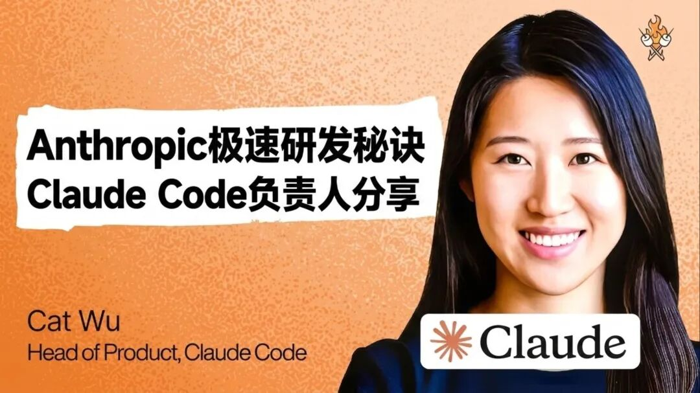
在人工智能技术以“周”甚至“天”为单位进化的当下，科技巨头与初创公司之间的边界正变得模糊。作为 OpenAI 最强劲的竞争对手，Anthropic 凭借 Claude 系列模型在开发者群体中赢得了极高的口碑。这种成功的背后，不仅是底层架构的突破，更是一场关于产品哲学与组织效率的认知革命。
本次深度对话聚焦 Anthropic 云端编码与协作产品负责人 Cat Wu。作为站在 AI 研发变革中心的关键人物，Cat 负责领导 Claude Code 和 CoWork 等核心产品的定义与落地。她不仅揭示了 Anthropic 内部如何通过极致精简的流程实现“日级”迭代，更深入探讨了在 AGI 前夜，产品经理（PM）这一角色如何从传统的“跨部门协调者”蜕变为“产品品味的定义者”。对于那些试图在 AI 原生时代寻找定位的从业者来说，Cat 的洞见提供了一份极具参考价值的生存指南。
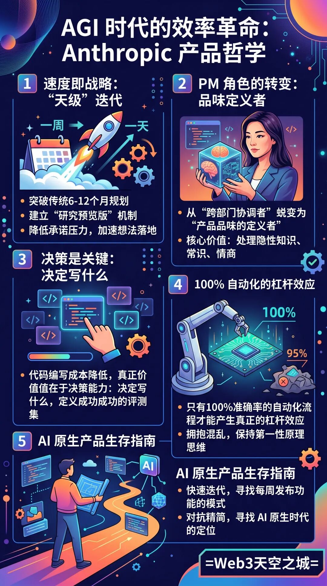
核心观点
• 效率的核心转变：AI 时代的产品开发已从 6-12 个月的规划缩短至天级迭代，PM 的核心价值从跨部门协调转向对产品品味的把控和对“黄金路径”的定义。 • 组织专注力：Anthropic 的后来居上归功于统一的安全对齐使命。这一使命简化了优先级权衡，使团队能为了公司整体目标牺牲局部利益。 • 人机协作新范式：人类大脑的价值在于处理隐性知识、情商、常识以及定义成功标准的“评测集（Evals）”。 • 真正的自动化：只有达到 100% 准确率的自动化流程才能产生真正的杠杆效应。PM 应鼓励团队将那些目前不完美的 AI 功能不断优化至完全可信赖的状态。
“AI 原生产品的关键在于快速迭代，并找到一种能让你真正做到每周发布功能的方法。”
“随着代码编写成本变得越来越低，真正变得更有价值的是决策能力，即决定要写什么。”
“只有达到 100% 准确率的自动化流程才能产生真正的杠杆效应。95% 的准确率往往意味着它还不是真正的自动化。”
“人类大脑的价值在于处理隐性知识、情商、常识，以及定义成功的‘评测集’（Evals）。”
“我们聘请那些乐于拥抱混乱的人。在 AGI 时代，保持冷静和第一性原理思维是防止精简的关键。”
速度即战略：从六个月规划到“天级”迭代
在传统的软件开发模式中，产品生命周期往往以季度或年为单位进行规划。然而在 Anthropic，这种节奏被彻底颠覆。Cat Wu 指出，由于 AI 技术的迭代速度极快，长期规划正在失去意义。“在 AI 技术出现之前，你可以按 6 到 12 个月进行规划。但现在，我们许多功能的开发周期已从六个月缩短至一个月，有时甚至缩短至一天。”
为了支撑这种极致的发布频率，Anthropic 在流程上进行了激进的“去阻碍化”处理。通过建立“研究预览版”（Research Preview）机制，团队降低了功能的承诺压力，允许工程师在产生想法后的周末就能将产品推向市场。Cat 强调：“作为 PM，应减少对跨季度路线图的投入，转而关注如何开辟‘概念角’，让最快实现落地的方案先行。” 这种“边飞边造”的模式，让 Anthropic 在竞争激烈的模型竞赛中始终保持着敏锐的市场触觉。
PM 角色进化：从流程协调者到“产品品味”定义者
当 AI 开始承担大部分代码编写工作时，PM 的职业边界正在发生深刻位移。Cat 认为，工程背景固然重要，但核心技能已转向对“产品品味”的精准把控。“产品品味依然是一项非常罕见的技能。当编写代码变得廉价，决定‘写什么’以及‘什么是令人愉悦的 UX’变得更有价值。”
在 Anthropic 的实践中，PM 的工作不再是撰写冗长的 PRD，而是通过构建“评测集”（Evals）来定义成功。“评估基准是一项被低估的工作。PM 的职责是定义什么是成功、什么是失败，并亲自参与 Evals 的制作。” Cat 透露，她会要求模型对自身行为进行“反思”，通过洞察模型决策的盲区来改进提示词或工具链。这种从“管理流程”到“管理审美与标准”的转变，定义了 AI 原生时代顶尖 PM 的新高度。
使命感驱动：Anthropic 如何在巨头竞争中保持专注
尽管起步时在资金和分发渠道上并不占优，但 Anthropic 却实现了惊人的后来居上。Cat 将其归功于组织内部高度统一的“安全对齐”使命。这种使命感不仅是道德层面的指引，更是商业决策的过滤器。“这种使命感简化了优先级权衡。如果存在两个竞争目标，我们会讨论哪一个对使命更重要，团队甚至愿意为此牺牲局部利益。”
这种专注力使 Anthropic 能够抵御发布社交网络或信息流产品的诱惑，将全部资源倾斜在赋能专业开发者和提升模型能力上。Cat 提到，在面对 Claude Code 源代码泄露或订阅政策争议等挑战时，团队展现出的冷静源于对核心目标的笃定。“使命意味着将 Anthropic 的长远目标置于个体组织之上。这种透明且一致的逻辑让所有人能以统一的方式执行决策。”
寻找 100% 的杠杆：人机协作的新范式
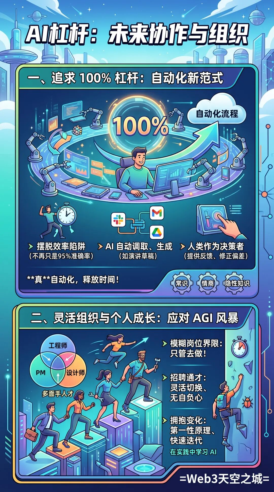
对于个体如何利用 AI 获取杠杆效应，Cat 提出了一个极具挑战性的标准：追求 100% 的自动化。她观察到，许多人止步于 95% 的准确率，而这正是效率陷阱所在。“对于一个只有 95% 准确率的流程，你依然需要人工审核，这并不是真正的自动化。只有付出努力让它达到 100%，你才能真正获得释放时间的杠杆。”
Cat 分享了自己利用 Co-work 制作演讲幻灯片的案例：通过连接 Slack、Google Drive 等数据源，AI 可以在一小时内调取所有内部讨论和外部反馈，生成一份具备设计水准的草稿。在这个过程中，人类的价值在于“作为决策者，决定最终产品中应该包含什么，并提供反馈以修正模型的冗长或偏差。” 在她看来，常识、情商以及处理隐性知识的能力，依然是人类大脑在 AGI 到来前最后的堡垒。
灵活的边界：AI 时代的人才模型与组织韧性
在 Anthropic 内部，工程师、PM 与设计师的界限正变得模糊。Cat 提倡一种“只管去做”的行动导向，鼓励员工跨越职能边界去解决问题。“我们倾向于招聘那些能胜任多重角色、能够灵活切换，并且在做任何有助于团队推进的工作时都毫无自负心的人。”
面对持续不断的行业震荡，Cat 的应对之道充满了第一性原理的哲学。作为一名攀岩爱好者，她将这种极限运动的专注感带到了工作中。“发布带 Bug 的功能过去会让我彻夜难眠，但现在我坦然接受。因为我知道我们会迅速收到反馈并在下个版本修复。” 她建议职场人在变革中保持冷静，通过实践而非旁观来学习 AI。“真正的顿悟时刻发生在智能体不仅能告诉你怎么做，还能代你执行任务的那一刻。去开发那些你每天都会使用的程序，这才是价值所在。”
在这个“世界最正常的一刻”，Anthropic 正在用它的节奏证明：在 AGI 的风暴中心，唯有极致的效率与坚定的使命感，才能在分崩离析的旧秩序中，构建出通向未来的新路径。
天空之城全文整理
AGI 时代的规划与发布节奏
Cat： 我认为要把握好对 AGI 的信仰程度是非常困难的。为超强 AGI 模型构建产品反而很容易，困难之处在于如何针对当前的模型进行规划。你如何才能激发它们的最大潜能？
Lenny： 我从未见过像你们 Anthropic 团队这样的发布节奏。
Cat： 我们希望消除所有阻碍产品发布的不利因素。我们许多产品功能的开发周期已从六个月缩短至一个月，有时甚至缩短至一天。
Lenny： 你在面试成百上千名产品经理时，总会感觉他们的切入点大错特错。
Cat： 产品经理的角色正在发生巨大变化，而且变化速度非常快。构建 AI 原生产品的关键在于快速迭代，并找到一种能让你真正做到每周发布功能的方法。
Lenny： 你认为产品经理需要培养哪些新兴技能？
Cat： 这归根结底还是产品品味的问题。随着代码编写成本变得越来越低，决定写什么变得更有价值。
角色分工与核心愿景
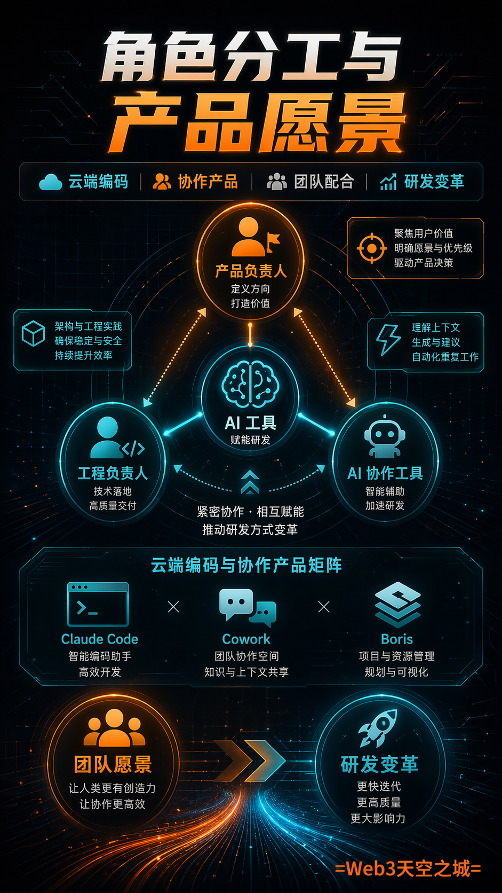
Lenny： 今天我的嘉宾是 Anthropic 云端编码与协作产品负责人 Cat Wu。Cat 处于人工智能、产品构建及研发变革的核心地带，她和她的团队正在打造的产品，正从根本上改变我们所有人构建产品的方式。她满载着深刻见解、智慧与经验。这是一期你不容错过的节目。在开始之前，别忘了访问 Lenny's ProductPass.com，那里为 Lenny 的时事通讯订阅者提供了独家超值优惠。
现在，请出 Cat Wu。Cat，欢迎来到播客节目。
Cat： 谢谢邀请。
Lenny： 我有太多问题想问了。我非常高兴你能来参加这档播客。我想先让大家了解一下你与 Boris 合作的角色。大家都认识 Boris。他的那一期节目是我们播客中最受欢迎的一期，别有压力。他创建了 Claude Code，领导着 inch 团队，每天通过手机提交数以亿计的 PR，我甚至都不清楚具体数字是多少了。我认为人们对 Claude Code 的成功、Cowork 以及你们正在构建的一切所给予你的赞誉还不够多。请帮我们理解你在团队中的角色、你是如何与 Boris 合作的、你们如何分配职责，以及 Claude Code 团队的 PM 角色是怎样的？
Cat： 我感到非常幸运能与 Boris 共事。他是一位出色的思想合作伙伴。他是我们的技术负责人。他在很大程度上是产品愿景的规划者。而且他非常擅长设定诸如产品未来需要达成什么样目标之类的愿景。比如在三个月或六个月后应该是什么样。这就像是该产品的 AGI 愿景版本。
我的大部分工作是弄清楚，从我们今天的状态到三到六个月后的那个愿景，路径是什么？我花费更多时间在跨职能协调上，确保我们的市场团队、销售团队、财务团队、产能等部门都认可这一计划，确保我们朝着同一个方向努力，并确保一旦功能准备就绪，发布过程中不会出现任何障碍。
我认为在很多方面这种合作都很有效，因为我们的思维方式高度同步，但实际上界限却非常模糊。例如，我认为我们的思维同步率约为 80%，剩下的 20% 中，有些是我认为对我们而言更为重要的事情，所以我来推动这些；另有 20% 是他比我更关心的，他就负责推动那些。
AI 时代产品经理的新挑战
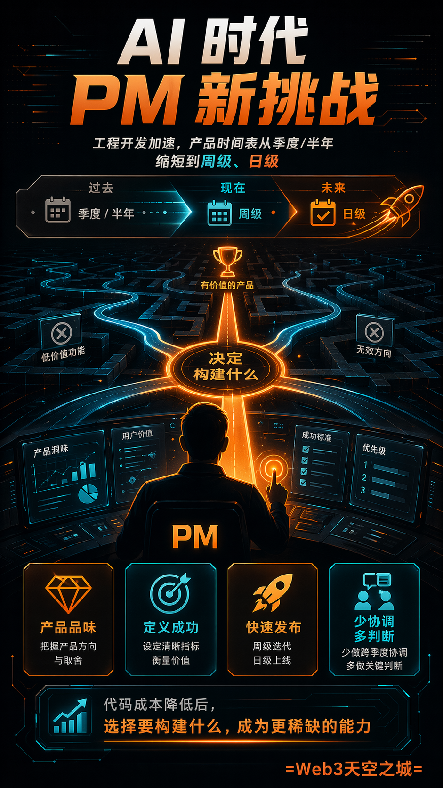
Lenny： 你在录制前分享过一件事，即你一直都在面试数百名 PM。就好像如果有人找我引荐去 Anthropic 做 PM，我每收一枚镍币，我就能拥有 300 亿的 ARR 了。那简直就是大家最想去工作的首选之地。所以我完全能想象你面试了多少 PM。你告诉你看到人们总是用错误的方式去尝试，尤其是他们对于如何成为一名成功的 AIPM 所需条件的认知。谈谈你的观察，以及人们需要理解什么才是当下取得成功所真正具备的要素。
Cat： 我认为在 AI 技术出现之前，变革的步伐要慢得多。因此，你可以按 6 到 12 个月的时间跨度进行规划。由于当时发布功能的速度较慢，人们非常强调与所有合作团队进行协调，以确保他们发布的功能能够为你的功能扫清障碍，因为在那时编写代码的成本非常昂贵。
我认为现在有了 AI，且工程开发被极大加速，加上模型能力提升的速度如此之快，我们许多产品功能的开发时间表已经从 6 个月缩短到了 1 个月，有时甚至缩短到了 1 周，乃至 1 天。随之而来的是，我们确实需要确保产品能够快速发布。
这意味着作为 PM，应该减少对某些方面的关注。即减少对确保跨季度路线图与合作团队保持一致的投入，转而更多地关注如何找出最快实现产品落地的方法，如何在我们产品套件中开辟一个“概念角”，让工程师或 PM 产生想法后，到周末就能将其交到用户手中。我认为在 AI 原生产品上表现最好的 PM，是那些能够设法缩短从产生想法到将产品真正交到用户手中所需时间的人，并能协助定义出我的产品中哪些是最需要实现“开箱即用”的关键任务。
Lenny： 我很喜欢这一点，因为你所说的是，人们还没有意识到他们需要行动得有多快，以及现在很大一部分工作其实就是帮助团队快速行动。有什么方法能推动这一点吗？你是怎么做的？除了能够使用最先进的模型之外，你的 PM 团队还做了什么来帮助他们实现如此快速的迭代？
Cat： 我认为第一件事是设定明确的目标。由于 LLM 的通用性极强，这实际上会产生很多模糊性，比如我们要为谁构建产品、我们要解决什么问题、以及最重要的使用场景是什么。
所以我认为优秀的 PM 能够明确指出：我们的核心用户是专业开发者。我们希望为该功能解决的主要问题，可能是权限提示过多，导致用户感到疲劳。而应用场景是我们希望企业中的专业开发者能够安全地实现零权限提示。这实际上设定了一个非常明确的目标，因为它排除了许多减少权限提示的潜在方案，从而让用户通过一个提示就能完成更多工作。
其次，我认为非常重要的一点是，要摸索出一套可重复的流程，以确保这些功能能够顺利发布。以 Claude Code 为例，我们实际上几乎所有的功能都是以研究预览版（research preview）的形式发布的。我们在发布时会明确标注，让用户知道这是一个早期产品，仅仅是一个概念，是我们试图获取反馈并进行迭代的内容，且可能不会长期提供支持。这样做降低了我们在产品发布上的承诺压力。我们可以仅用一两周时间就把产品推向市场。
PM 应当做的第三件事是帮助团队建立框架，使成员明确何时需要引入跨职能合作伙伴，以及这些合作伙伴的具体期望是什么。例如，我们在工程、市场和文档部门之间建立了一套非常紧密的协作流程。因此，当工程师认为某项功能已经就绪并经过内部试用（dog-fooded）后，他们会将其发布到我们的常青发布室（evergreen launch room）中。随后，负责文档的 Sarah、负责 PMM 的 Alex，以及 TARC、LRIC、LLAC 和负责 Devrel 的 Lydia 就会立即介入，最快能在次日完成相应的市场公告。正是因为我们拥有如此紧密的流程，才降低了任何工程师发布产品功能的阻力。PM 是应该负责建立此机制的角色。
Lenny： PRD 在其中扮演什么角色？所以你提到的目标对于明确成功的定义非常重要，这一点是毋庸置疑的吗？这是为谁准备的，或者现在是为谁服务的？你准备好了吗？PRD？难道仅仅是几个要点列表吗？这在 PM 的工作世界中是如何演变的？
Cat： 我们主要做两件事。
首先，我们有非常严谨的指标体系，并且每周会与整个团队一起进行指标解读。这样做的目的是确保每个人都能深入了解我们业务的各个方面、我们的关键目标是什么、趋势如何，以及是什么在驱动这些指标。
我们做的第二件事是制定一份团队原则清单，其中包含了我们的关键用户是谁、为什么这些人是我们的关键用户。我们将所有这些内容清晰阐述出来的原因，是希望团队中的每个人都能感到自己真正理解了我们的业务运作方式。他们了解什么对我们来说是重要的，以及我们愿意做出怎样的取舍。这让人们能够自主做出决策，而不会觉得被 PM 或其他利益相关者所阻碍。
Lenny： 我喜欢其中很大一部分内容，比如，未来我们仍然需要 PM。现在有太多关于“为什么我们需要 PM？”的讨论，认为我们只需要发布和构建产品，只需要工程师。
Cat： 其实我们有时确实会编写 PRD。所以我认为，对于那些特别模糊的功能，写一份一页纸的文档确实有帮助，内容包括目标是什么、令人愉悦的用例是什么，以及我们需要修复的当前失败模式是什么。偶尔会有一些项目，特别是那些需要繁重基础设施建设的项目，确实需要花费数月时间。在这种情况下，我们仍然会编写 PRD。
极致的发布节奏与内部工具
Lenny： 我想进一步深入探讨一下你们是如何做到如此快速推进的。我从未见过像 Anthropic 员工这样快速发布产品的节奏。就像有人制作了这张 Anthropic 的发布日程表，字面上看几乎每天都有重大功能或产品发布，所以人们在网上提出了一个问题：你们构建了那个极其强大的模型 Mythos，它目前仍处于预览阶段，因为功能太强，人们对它的能力有些顾虑。你们一直在使用它吗？这是你们能够实现如此快速进展的部分原因吗？
Cat： 其实我们几个季度以来一直进展很快，所以我认为这并不完全是因为 Mythos。Mythos 是一个极其强大的模型。
我们确实在内部使用这些模型。我认为这在一定程度上提高了我们的发布速度，但我认为这并不是提升的主要原因。我认为很大程度上归功于流程以及对团队的期望。我们在流程上非常精简。我们希望消除产品发布过程中的每一个障碍。我们要确保团队中的每一个人都有能力在不到一周，有时甚至是一天之内，将自己的想法从雏形变为现实并推向市场。
Lenny： 酷。天哪。既拥有最先进的模型，又在开发产品，这真是一项巨大的优势。那太酷了。
Cat： 我们非常幸运能够使用这些前沿模型工作。这真是一个了不起的优势。
Lenny： 就像构建一个东西，然后使用它，进而实现更快的迭代。这太有意思了。还有一些类似这样的其他周边话题。我想在这次对话中谈谈这些分支话题。Anthropic 最近动态频频，我非常好奇想听听你的见解。一是大概一周前，Claude Code 的全部源代码泄露了。有人将其泄露了出去，我认为那是一个失误。有人做了这件事，对此你有什么评论吗，就像发生的那样？究竟哪里出了问题？现在人们的状态如何？
Cat： 所以当我们看到这个问题时，立即进行了调查。我们意识到这是人为失误的结果。当时有一位工作人员正在与 Claude 协作编写 PR。这只是我们发布软件包流程的一次更新。而且它实际上经过了两层人工审核。所以这就是人为失误导致的结果。我们已经加强了流程，以确保未来不再发生此类事件。
Lenny： 这个人还在 Anthropic 工作吗？他们做对了吗？
Cat： 没错。这是一个流程故障。最重要的事情是从中吸取教训，并增加更多的安全保障措施，以防止类似情况再次发生。这就是我们一直以来的工作重点。而且其中大部分措施已经上线了。
商业决策与开源争议
Lenny： 好的。我还有一个关于 OpenClaw 的问题。最近出现了一种限制人们在 OpenClaw 中使用 Claude 订阅的举措。人们对此感到非常不满。他们不明白为什么会发生这种情况。感觉这似乎对开源社区造成了一些伤害。人们需要了解关于这一决策背后的哪些情况呢？
Cat： 我们一直观察到对 Claude 有很大的需求。我们一直在努力扩展基础设施，并提高 harness 的 Token 效率，以便大家能获得更多的使用量。它并不是为第三方产品设计的，这些产品的使用模式与我们的第一方产品不同。
我们花了很多时间来研究能提供的最无缝的过渡方案是什么。所以我很高兴能说，每个人在订阅的同时都能获得一些额度。但确实，我们不得不做出艰难的决定，即我们需要优先考虑我们的第一方产品和 API。这就是由此产生的决策。
Lenny： 没错。对我来说，这非常有道理。就像你们以每月 200 美元的价格补贴这种使用量一样。这基本上就是无限量使用，我觉得人们并不理解这一点。这就是他们试图赚钱的方式。我们在这里努力实现盈利。在算力需求如此旺盛的情况下，我们不能就这样免费提供。所以我理解。回到产品经理团队，Anthropic 的产品经理团队是什么样的？有多少名产品经理？他们是如何组织的？
Cat： 我们有几个产品经理团队。我想我们大概有 30 到 40 人左右，目前的产品经理人数。我们有由 Dianne 领导的研究型产品经理团队。该团队负责收集客户针对我们模型的所有反馈，并将其反馈给最优秀的研发团队以采取行动。他们还负责指导模型的发布工作。
此外还有 Claude Developer Platform 团队，负责维护 Claude Code 所构建的基础 API。他们还会发布诸如托管代理（managed agents）之类的产品，这为您构建代理提供了一种途径。我们可以代表您托管这些代理。
接着是同时服务于 Claude Code 和 Cowork 核心产品的 Claude Code 团队。还有 Enterprise 团队，致力于帮助我们所有的企业客户更轻松地采用 Claude Code 和 Cowork。其工作涵盖了从成本控制、RBAC、安全管控，到确保企业客户能够非常有信心且舒适地使用我们的工具等各个方面。
我们还设有增长团队，负责推动我们整个产品系列的业务增长。因此，我们与他们在 Claude Code 和 Cowork 的增长方面有着非常密切的合作。我知道他们也与其他团队合作推动 CDP 增长，即增加使用 Claude API 的用户数量。说到增长，Amol 刚才刚参加了播客节目。
模糊的角色界限与产品品味
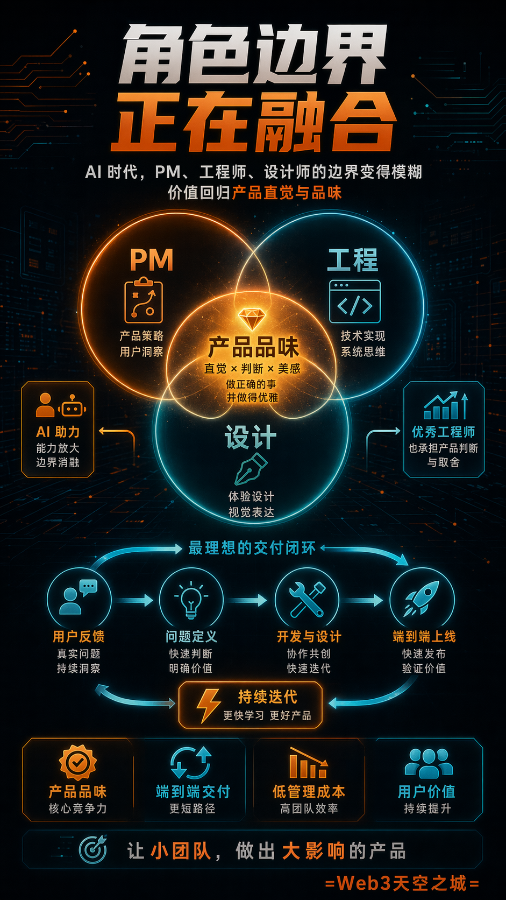
Lenny： 你有一个非常独特的见解，大多数人并没有分享过。人们总有一种感觉，即未来我们需要更少的 PM。为什么我们需要 PM？工程师完全可以直接发布产品。他的观点是，由于工程师的迭代速度非常快，PM 和设计师受到了挤压。没有足够的时间去掌控所有正在发生的事情。每天都有功能在发布。因此他的观点是，他需要更多的 PM，因为跟上节奏变得越来越难。你对此有什么看法？你认为未来 PM 的招聘需求会增加吗？你如何看待 PM 职业的长期发展？
Cat： 我认为所有这些角色都在演变之中。产品经理们正在从事一些工程方面的工作。工程师们正在从事产品经理的工作。设计师们正在进行产品管理工作，同时也参与编写代码。
你可以选择招聘更多具备优秀产品直觉的工程师，或者保持现有的工程师招聘规模，转而招聘更多产品经理来协助指导部分工作。在我们的团队中，我们非常专注于招聘具备优秀产品直觉的工程师。这样一来，我们可以减少交付任何产品时所产生的管理成本。我们团队中有许多工程师完全有能力实现端到端的流程，即从在 Twitter 上看到用户反馈开始，一直到交付产品。在周末结束时，几乎无需产品团队的参与。我认为，这实际上是交付产品最高效的方式。
所以我认为工程师和产品经理的角色在某种程度上是重叠的。而你从拥有这两者中的任何一个中都会受益匪浅。我认为产品品味依然是一项非常罕见的技能。我们几乎会录用任何展现出这种强烈特质的人。你的背景是工程学，我做了很多年的工程师。在加入 Anthropic 之前，我曾在一家 VC 短暂工作过。事实上，我们团队中几乎所有的 PM 要么曾是工程师，要么在这里直接参与 Claude Code 的代码交付。所以我认为这是有助于与团队建立信任并使我们行动更加迅速的因素之一。而且实际上，我们的设计师之前也做过前端工程师。
Lenny： 因为这是一个重大的问题。这种新兴事物正在发生，维恩图正在重合。我想对很多人来说，一个核心问题是：如果你出身于工程、产品或设计领域，哪项核心技能会是最有价值的？在 Anthropic 和 Claude Code 工作时，我认为工程背景非常有价值。我很好奇在其他公司，是有设计背景的人转做 PM 更有价值，还是纯粹的 PM 更有价值？
Cat： 我依然认为这最终取决于产品品味。例如，随着编写代码的成本变得越来越低，真正变得更有价值的是决策能力，即决定要写什么：这个功能最合适的 UX 是什么？用户体验它的最令人愉悦的方式是什么？我们收到了成千上万个 GitHub issues，要求实现各种各样的事情。弄清楚哪些值得构建以及构建它们的正确方式，需要极大的细心和品味。
我认为这种技能储备可以来自任何背景，但这确实是最重要的事情。我认为工程背景之所以特别有用，至少在接下来的几个月内是这样，是因为如果你有工程背景，你就能更好地预判某件事的难度，而这往往是你决定要构建什么时的考量因素。所以，如果某样东西构建起来非常容易，那么与其争论不休，不如直接花一小时把它做出来。但如果某样东西构建起来难度较高，并且你事先就能预见到这一点，那么你就会明白，这对我们的团队来说，推出这个功能将需要付出高得多的代价。所以这在优先级排序方面有一点帮助。
Lenny： 你刚才提到未来几个月，这是因为模型在未来几个月内可能会变得非常强大，以至于你可能根本不需要了解那么多了吗？
Cat： 我认为有价值的技能组合确实变化得非常频繁。因此，预测几个月以后的情况确实很难。所以这与其说是我认为具体会发生什么转变，不如说是我认为重大的转变将会发生。
Lenny： 所以你并不是说届时会有什么神话般的事物出现，从而改变一切，让我们完全不需要了解任何工程知识。
Cat： 不，我只是想说，每隔几个月，编码能力似乎就会出现一次巨大的提升，这随之改变了哪些其他角色更具价值。我认为最重要的是能够具备第一性原理思维，从而理清技术领域是如何变化的，明确团队真正需要你做什么，并迅速介入填补这些空缺。
因为我认为工作内容正变得越来越模糊，这意味着优秀的 PM 能够理解所有的缺口所在，找出优先级最高的问题，然后搞清楚我该如何学习那一技能组合，或者我现有的哪些技能可以应用于这一挑战。因此，我认为当前的环境推崇那些能够胜任多重角色、能够灵活切换，并且在做任何有助于团队更快推进的工作时都毫无自负心的人。
AGI 前夜：人类的剩余价值与生存心态
Lenny： 我很喜欢这个回答。我一直在问处于你们这种位置的人，即那些处于 AI 能力最前沿并利用最新工具进行构建的人一个问题：在通往超级智能的过程中，人类大脑在哪些方面还能持续发挥作用并保持必要性？我从这里得到的回答本质上是：选择要去解决的问题，洞察市场的发展方向，并确定优先级。此外，还要能够判断你所构建的东西是否优秀且正确，并至少以早期版本将其推向市场。这样理解还有其他方面是人类大脑在至少未来几个月内将继续发挥作用的吗？
Cat： 我认为人类仍然提供了一种模型所不具备的常识水平。任何产品的发布都有成千上万个动态环节。其中一些虽然非常细微，但总有很多地方可能会出错。我认为模型并不总是能很好地把握所有利益相关者是谁、他们之间的关系如何、他们的偏好是什么，以及与他们沟通、让他们保持协作的正确途径是什么。我认为许多这类更隐性、常识性以及情商类的知识依然非常有价值。当然，我们希望模型在这方面能够有所改进，而且我相信它们会做到的。但就目前而言，我认为仍然存在差距。
Lenny： 作为一个身处风暴中心的人，面对如此持续不断的变革，你该如何应对？也许那里反而很平静。但你是如何做到始终掌握最新动态的呢？在经历这一切疯狂的变革时，你又是如何保持理智的？
Cat： 我认为我们的团队成员依然是那些乐于拥抱混乱的人。因此，我们尝试以微笑迎接每一个挑战，因为这里总是有太多的事情发生。太多事情正在发生。总是存在如此多的风险和棘手的情况，如果你对任何事情都感到压力过大，最终只会精疲力竭。
因此，我们真正寻找的是那种能够审视挑战，然后感叹一声“哇，这会很难”的人。但我很兴奋能去应对它，并且我会尽我所能做到最好。我知道我不可能是完美的，但只要知道自己已经尽力了，我依然能安然入睡。
对于未来哪些技能至关重要，这是一个有趣的回答。我忘记是谁说的了，可能是 Ben，他说这可能是世界最正常的一刻了。确实，挑战只会越来越大。我感觉每周都有很多时候，周日晚上出现一个 P0 问题，到了周一就变成了 P00 问题，而到了周一下午甚至变成了 P000 问题。你会感叹，真不敢相信大家之前还在为周日的那个 P0 问题担忧。
但我认为你必须承认，一个人的精力是有限的，你需要保证充足的睡眠，这样第二天才能做出正确的决策。同时，要极其严苛地确定时间投入的优先级，搞清楚最重要的事情是什么，并学会适度放手。有些产品发布时并未达到我预期的那种精致程度，但我们要知道，我们的首要目标是赋能专业开发者。只要产品没有阻碍核心用例，即便它不够成功也没关系，因为我们会听取反馈并在下一个版本中修复它。发布一个带有 Bug 的功能，这在过去会让我彻夜难眠。但现在我已经可以坦然接受了，因为我知道，我们会迅速收到反馈，并会在下一个版本中将其修复。
Lenny： 我脑海中浮现出的正是那个 GIF。我觉得这可能出自 Pirates of the Caribbean，画面里一个人正走下船上的楼梯，整艘船在他周围分崩离析，而他却极其淡定地走着，仿佛周围的一切都在坍塌。这很有意思，因为我遇到的每一位来自 Anthropic 的员工都表现得非常从容且乐观。我觉得这是一个非常深刻的见解，即保持这种冷静和乐观的态度，而不是陷入“天哪，一切都乱套了”的疯狂之中。
Cat： 确实如此。我认为如果你缺乏这种心态，很容易会感到精疲力竭。我们倾向于聘请那些在行业内深耕已久、经历过诸多起伏并具备良好判断力的人。他们清楚什么能赋予自己能量，以及如何长期维持这种能量。我认为这一点对我们帮助很大。
牺牲与权衡：产品一致性的代价
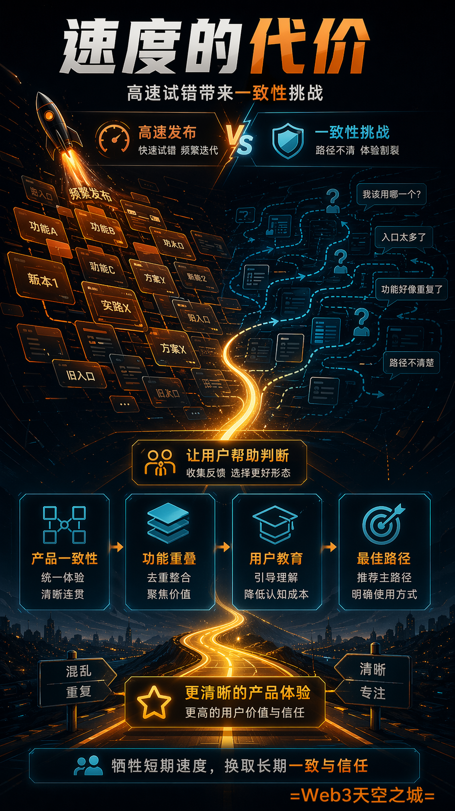
Lenny： 太有趣了。我想问的一个问题是，现在的角色界限正变得模糊。工程师正在转型为 PM，每个人都成为了每个人。在那个世界里，我们失去了什么？我们是失去了职业阶梯和清晰的职业路径吗？我们是失去了设计一致性和代码质量吗？这可能确实存在一些弊端。在你看来，有哪些东西是我们在为了更大的利益而不得不牺牲的？
Cat： 我们牺牲了产品一致性。从历史上看，当编写代码成本高昂时，你会仔细规划产品套件中的一切，包括每个产品如何相互关联、每个产品的具体用例是什么、它们如何集成，并且你几乎会为每个用例只提供一个产品。
而现在，随着 AI 的飞速发展，以及我们需要测试的大量想法，我们有时确实会出现功能重叠的情况。很多时候，这是因为我们在内部有两种都非常喜欢的形态，我们想让外部受众告诉我们哪一种更好。然而，对于新用户来说，这意味着他们可能不知道实现某个目标的最优路径是什么。
我们需要开展更多的教育工作，帮助用户了解核心功能是什么，以及使用这些功能的最佳实践。我认为这就是频繁发布大量功能的代价。我认为用户也会感到很难跟上最新的变化。通常在传统的产品管理中，你每月或每季度发布一个功能，用户很容易理解，即只需每月查看一次就能学到新东西；即使我忽略它六个月也没关系，不会感觉错过了什么。我认为在这些代理式工具上，不仅是像代码和协作工具，而是整个生态系统，人们都感到需要每天查看 Twitter，以了解最新的动态。
我认为我们还能做更多，帮助人们减少那种身处永无止境、越转越快的跑步机上的感觉。我希望人们能感觉到，只要打开这些工具，工具就能引导或教授他们想要了解的知识，让他们感到被赋能。
Lenny： 没错，我前几天看到你们推出了一个非常有意思的功能，我想应该是叫 /powerup，它基本上会指引你了解使用 Claude 的所有巧妙方法和最佳实践。这就是为了实现这一目标吗？
Cat： 没错，确实如此。过去我们其实并不想做像 /powerup 这样的功能，因为我们认为产品应该足够直观，用户根本不需要经历任何教程。但随着时间推移，我们意识到功能实在太多了，且对于内置新手引导体验的需求非常大，于是我们稍微背离了最初的原则——即不设置任何引导流程，并增加了这个功能，因为有太多的用户想了解这些成百上千的功能。“我绝对需要使用的那 10 个功能是什么？”所以我们整合了这些内容。
使命感驱动：Anthropic 的后来居上
Lenny： 这真是一个奇特的世界。Anthropic 在 B2B 企业领域非常成功，而传统上，企业市场并不会频繁发布大量新功能。通常每季度发布一次，这与我们每天都有新东西推出的做法截然相反。所以，也许可以顺着这个思路聊聊。Anthropic 最近的发展势头简直不可思议。Anthropic 起步时落后很多。曾有人私下透露，它就像一家资金最匮乏、没有任何分发渠道的公司。它是第一家被淘汰的吗？OpenAI 当时遥遥领先，人们普遍认为 Anthropic 在长期竞争中毫无胜算。而现在它势不可挡，在表现上大幅超越了那些大型公司的团队，增长惊人，单月年度经常性收入（ARR）达到 110 亿美元。等这段内容发布时，这个数字可能还会更高。作为内部人员，你认为 Anthropic 能够后来居上并取得如此成功的关键因素有哪些？
Cat： 最重要的两点，第一是这种统一的使命感。这种重要性怎么强调都不为过。我们雇佣的人都是最关心如何为全人类实现安全 AGI 的人。这实际上是我们决定整个产品部门应重点交付什么内容时经常参考的标准。正因为我们将这一使命置于任何独立产品线之上，我们才能够迅速做出跨越整个组织的决策，并以统一的方式执行它们。所以我认为，这在像我们这样规模的公司里是从未见过的。
Lenny： 为了确保这一点清晰明确。本质上，首要使命是安全对齐，确保 AI 对世界有益。你的意思是，仅仅拥有这样一个明确的使命，就能让决策变得容易得多。
Cat： 如果存在两个相互竞争的优先级，我们会讨论哪一个对 Anthropic 的使命更重要。这使得决定优先处理哪一个变得容易多了，之后每个人都会支持我们决定的那一个。有时这意味着，嘿，我们想要交付 Claude Code 上的某项功能，但另一件事更重要。因此，我们降低了该功能的交付优先级，并推迟到以后再处理。
Lenny： 这其中真正有趣的地方在于，我认为它解释了为何与另一家公司——或许名字听起来像 OpenAI——相比，他们在做许多不同的事情。我在这里听到的本质上是：我们不会去发布社交网络，我们不会去发布信息流，因为那不符合这一使命。这使得 Anthropic保持了专注，而这似乎正是成功的核心要素。
Cat： 嗯，当我思考使命时，我想到的是将 Anthropic 的目标置于任何个体组织或任何个体产品之上。所以对我而言，我认为我们非常擅长的第二件事是专注，我觉得使命对我来说有些许不同。使命意味着团队愿意为了 Anthropic 的目标和 KR 而做出牺牲，损害他们自己的目标和 KR。而且人们非常乐意做出这些权衡。
举个极端的例子，如果 Claude Code 失败了但 Anthropic 成功了，我会感到非常高兴。我们整个团队都非常愿意为了遵循这一思维链条而做出决策。
Lenny： 我不知道你能否深入探讨这个问题，但你觉得停止开放模型（open weights/open access）的决定是否与此有关？即‘这并未推动 Anthropic 的使命，它没有按照我们期望的方式运作，所以我们需要停止它’。
Cat： 我认为对 Anthropic 来说，最重要的目标之一是扩大我们能够触达的用户数量，而实现这一目标的方式之一就是通过我们的第一方产品订阅服务。所以我们非常希望在这一领域持续加大投入。但这有时确实会以牺牲第三方产品为代价。
产品矩阵：Claude Code、Cowork 与桌面端
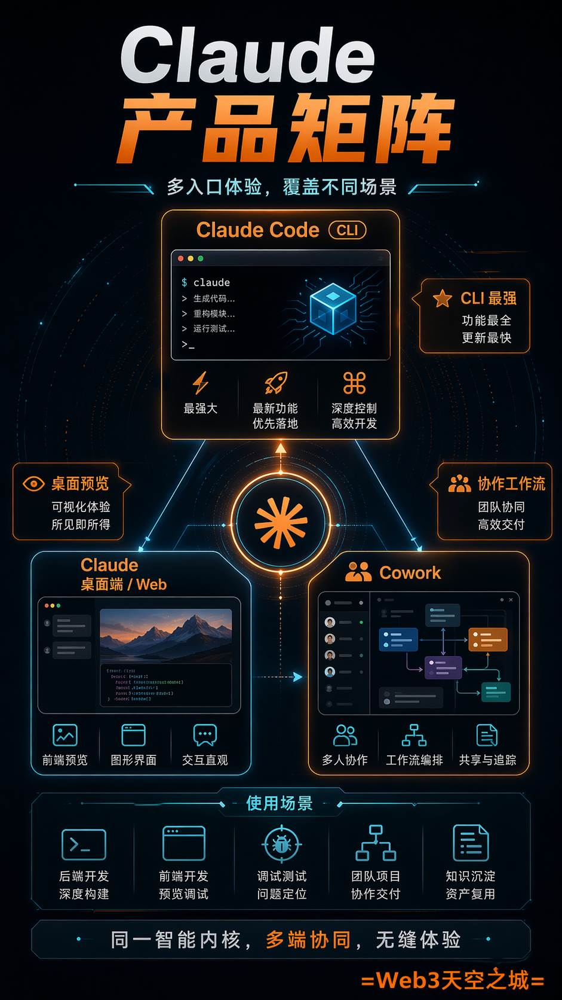
Lenny： 我们一直在讨论 Claude、Claude Desktop 以及所有这些工具，我想确保大家都能理解它们，我也很好奇你是如何使用这些工具的。目前有 Claude Code、Claude Desktop/Web 以及 Claude 网页版。了解何时使用哪种工具的最佳方式是什么？你分别在什么时候使用这三个工具？
Cat： 当我在终端执行一次性的编码任务，且希望使用所有最新功能时，我倾向于使用 Claude Code。CLI 是我们最初的产品界面，也是我们功能通常最先落地的平台，因此，它是所有工具中最强大的。所以，当我只是想一次启动一项或者少数几项任务时，我倾向于使用这种方式。
我认为在进行需要前端开发的工作时，桌面端确实表现得非常出色。我特别喜欢使用我们的预览功能。因此，如果我正在构建一个 Web 应用，我通常会同时使用 Claude Code 和桌面端。我会把预览窗口开在右侧，这样在我与 Claude 对话时，就能实时看到我正在开发的 Web 应用。对于那些偏好图形化界面的人来说，它也非常棒。对于非技术人员而言，终端可能会让他们感到非常陌生。你会遇到各种令人心慌的弹窗，而且无法像使用其他大多数产品那样通过点击来操作。所以，很多人在终端环境中会感到不自在。如果你也是这样，我强烈建议你尝试一下桌面端的 Claude Code。桌面端在概览全局任务进展方面也表现得非常优秀。这样你就能在桌面上看到你的 CLI 终端会话。你可以看到你的其他桌面会话。你可以看到你在 Web 和移动端启动的会话。所以这是一个一站式的控制平面，你可以在这里查看所有的任务。
我认为 Web 和移动端的优势在于，它们非常适合在移动过程中启动任务。CLI 和桌面端都需要你在本地笔记本电脑上操作。这是一种限制，因为有时你会在外面。比如你在户外活动。你在散步。而且你没有打开笔记本电脑。我数不清见过多少人，在户外时把笔记本电脑打开，连接着手机热点使用。这恰恰说明我们缺失了一款能满足这一需求的产品。对我而言，移动端能让你随时随地处理这些任务，这样你就无需随身携带笔记本电脑，也不必担心无论身在何处都要保持电脑处于开启状态。
Lenny： 我很喜欢这一点。我见过飞机上的人这样，这现在已经成了一个梗。只需再等一下，让我这个 Agent 完成任务。
Cat： 我不能在 Wi-Fi 下关闭它。我认为对于 Cowork 来说，它所填补的角色在于，每个人都有大量非代码类的工作产出。无论是清理 Slack 消息至零，还是清空收件箱，亦或是为即将到来的客户会议制作幻灯片，还是快速起草一份关于功能目标或发布计划的文档，这些任务产出的均非代码，而 Cowork 正是为此而生。因此，我在心中对这些产品进行了划分：如果我构建的内容产出是代码。我会使用 Claude Code、桌面端或移动端的 Claude Code。如果输出的内容不是代码，我会用 Cowork 来处理。
Lenny： 人们简直忽视了 Cowork 所取得的成功。它的增长速度简直快得惊人。而且我认为人们可能还没搞明白它的用途。那么，你能不能结合你作为 PM 的工作，分享几个应用场景？比如你使用 Cowork 来节省时间、提高工作效率时，有哪些非常有趣、甚至出乎意料的方法？
Cat： 如果你刚开始使用 Cowork，首先要做的事就是连接所有与你角色相关的数据源。因为只有当 Cowork 能够获取其所需的所有背景信息时，它才能出色地为你整理出输出结果。这意味着我连接了我的 Google Calendar、Slack、Gmail 和 Google Drive，这样它就能够掌握信息，并灵活地找到相关背景来提出问题或调取讨论串，这大大提高了结果的质量。
我使用它的场景例如：昨晚我在处理即将举办的 Code with Claude 大会，我需要在会上进行几场演讲。其中一场演讲的主题是关于 Claude Code 从助手向全功能 Agent 的转型。在这次演讲中，我想展示我们发布的所有推动这一转型的产品，并找出内部有哪些成功案例可以作为演示素材。因此，我连接了我的 Google Drive 和 Slack，我们的产品营销人员 Alex 草拟了他认为我们应该涵盖的要点，我把这些全部输入给 Cowork，并告诉了 Cowork 我想要讲述的叙事逻辑。它真的就这样工作了一个小时。它浏览了 Twitter 以查看我们发布的内容。它查阅了我们的 Evergreen 发布室。它查看了我们 Claude Code 的公告频道，那是我们团队发布关于如何从 Claude Code 中获取最大价值的演示内容的地方。它将所有这些信息汇总成了一份 20 页的演示文稿，我今天早上醒来时就看到了它。我通读了一遍，内容相当不错。有一些地方需要微调。所以我确实需要给它一轮反馈。我喜欢幻灯片上的文字极简，而它当时写得稍微有点冗长，但你要知道，它比我能做出来的速度快得多。而且因为 Cowork 可以访问我们整个设计系统，它看起来就像是 Anthropic 的设计师制作的一样；当你看到它时，你会觉得这真是极其精致。所以这些事情现在快得多了，如果让我自己制作这份幻灯片，可能需要花上几个小时。但取而代之的是，它直接生成了一份质量相当高的草稿，这样我就可以专注于确保我们插入其中的演示内容足够出色。
Lenny： 这听起来简直是产品经理们梦寐以求的事情，毕竟制作演示文稿太烦人了。
Cat： 它太慢了。
Lenny： 我喜欢那些无论何时看到这份演示文稿的人的反应。这将会向大众发布。显然，这并不是一次性完成的版本，但你已经对其进行了迭代。为了方便大家亲自尝试。那么第一步是连接他们的，你刚才说的是 Slack 你还建议他们连接什么？
Cat： Slack、Google Calendar、Gmail、Google Drive。你应该连接你的通讯工具，以及你存储团队关注事项、个人关注事项及工作内容等真实数据源的地方。
Lenny： 好的。那你输入了什么大致的提示词来生成这份幻灯片？
Cat： 我只是写道，为 Code with Claude 会议制作一套幻灯片。这是我们的 PMM 建议涵盖的内容。这是我做的初稿，我不太喜欢。这是我手动制作的一份，我也不喜欢，但我把链接放上去了。你能先创建一个包含详细内容的拟议大纲吗？另外，要确保它不要与主题演讲有太多重叠，因为主题演讲更为重要。然后 Claude 阅读了我发送给它的一系列链接，并创建了一份建议大纲。接着我通读了它的提案以及它为我们可能涵盖的内容所生成的所有不同想法。我直接决定了最终演示文档中实际需要包含的内容。
我认为这恰好体现了当今 PM 的角色定位。Claude 就像是一个很棒的头脑风暴伙伴。它能够非常快速地综合海量信息，并为你呈现所有的可能性。但 PM 的职责依然是做出最终决策，即：最终产品中应该包含什么？因此，关于这一点，我最终决定演讲内容应涵盖从确保本地任务成功，到确保每个 PR 通过测试，再到帮助工程师提交更多 PR 的演进过程，并确定针对其中每一项，哪个演示最具有说服力。在大纲决策做出后，Cowork 用了几个小时就构建完成了整个侧边演示文档。
Lenny： 这太棒了。
Cat： 不用再做那部分工作真是太棒了。
Lenny： 而且这种感觉就像是在和一位演示文稿设计师交流，对方不仅真正了解你所做的工作，还能将其转化为你想要的实际内容，而不仅仅是让外观看起来很精美。你是如何处理设计系统部分的？它是如何运作的？
Cat： 它是如何获知 Anthropic 的设计系统的？我为此所做的是，我们实际上已经拥有了一套用于所有外部业务往来的标准化演示文稿。所以我只是让 Claude 访问了这些资料。这样它就能看到我们使用的颜色、字体，以及各种可能的幻灯片格式。它大约有 20 个这样的示例幻灯片。提供了一个示例。
Lenny： 明白了。既然你喜欢上传功能，这是我们基于此制作的模板。
Cat： 是的。如果你有保存好的侧边格式，也可以连接到你的 Figma MCP，它能直接将其拉取进来。
集中化的工具栈与“可黑客化”的办公系统
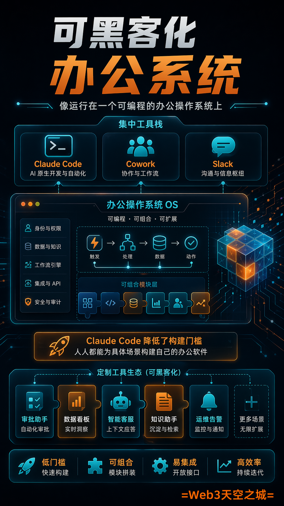
Lenny： 顺着这个话题，我一直很好奇作为 Anthropic 的 PM，你的工具栈里都有什么？显然是 Claude Code、Cowork 以及所有的 Anthropic 工具。你还在用什么？你刚才提到的其他 Slack 应用是什么？还有别的吗？
Cat： 我的工具栈相当集中。Claude Code、Cowork 和 Slack。Anthropic 在很大程度上是运行在 Slack 上的。我觉得它就像我们公司的核心操作系统。在日常工作中，我想大约 30% 的时间我都在不断测试 Cowork 和 Claude Code 的极限，这样我就能非常清楚我们做得还不够好的地方。我花了很多时间与模型进行交流，以理解它为何会犯下那些错误。
我们实际上开发了许多内部工具。我认为 Claude Code 为我们整个公司真正带来的突破之一是，它极大地降低了构建任何定制化工具的门槛。即你想要的任何应用程序。因此，我们看到人们为了满足特定用例需求，纷纷开始构建个性化的办公软件，而不是继续使用那些无法完美适配需求的工具。
Lenny： 我得再多了解一下。有哪些例子？你或者其他人构建了哪些非常受欢迎且实用的工具？
Cat： 负责 Claude Code 的销售人员之一意识到他一直在反复制作同样的演示文稿。于是他利用我们已知效果良好的核心 Claude Code 演示文稿案例，构建了一个 Web 应用程序。就像是入门、进阶和精通四重代码。然后他有一种方式可以输入特定的客户背景，这些信息从 Salesforce、Gong 以及其他笔记中提取，以便我们为特定客户定制演示文档。我们会提取出诸如：好的，该客户正在使用 Bedrock、Claude for Enterprise 或 Console，这会影响他们可用的功能。它会提取出诸如：好的，该客户关注软件开发生命周期的代码审查阶段。因此，我们会在此处添加一张关于我们代码审查功能的幻灯片。它会提取出诸如：好的，该客户需要符合 HIPAA 合规性，或者需要 XYC 安全控制。因此，我们会确保在他们的演示文档中添加一两张相关的幻灯片。然后，例如，如果这是一个使用 Vertex 或 Bedrock 且不想使用 Claude for Enterprise 的客户，那么我们就会删除一些仅限 Claude for Enterprise 的功能幻灯片。通常这需要 20 到 30 分钟的手动工作。所以人们要么花时间去完成，要么干脆选择不做，直接使用通用演示文档。有了这个，只需要几秒钟就能得到一份量身定制的演示文档。
Lenny： 有趣的是，Slack 就像是一个没人想要试图去自行开发替代品的工具。Slack 持续胜出，正如你所描述的那样，它在许多公司里简直就像是操作系统一样。这太有意思了。人们谈论 Salesforce 时会说，这只是 SaaS，我们不再需要 SaaS 软件了。我们要构建自己的系统。但 Slack 是一个令人喜爱的工具，没人想试图与它竞争或开发出更好的版本。
Cat： 我认为它是非常重要的通信基础设施。而且我认为他们出色地完成了帮助每个人获取实时更新这一核心任务。
Lenny： 没错，人们虽然会批评 Slack，但它在实现其目标方面确实非常出色。而且最前沿的团队都对它产生了依赖。太有趣了。
Cat： 而且我也很喜欢他们所提供的自定义功能，操作起来非常简单。所以，我们很喜欢制作 Slack 机器人。这种类似于可黑客化的特性意味着我们能够以自己想要的方式与 Slack 进行集成。所以非常感谢 Slack 在这方面所做的工作。
Token 使用量与应用 AI 团队
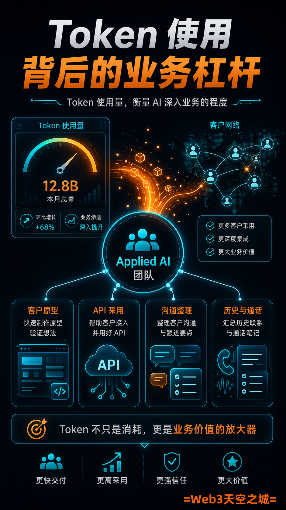
Lenny： 好的，你刚才谈到了所有这些不同的团队，以及他们如何利用 Claude Code 和 Cowork 来开展业务。除了工程团队之外，还有哪些团队在使用这些工具？我猜工程团队是最大的 Token 使用方，但如果不是这样的话，那将会非常有趣。目前在 Token 使用量上排名第二的职能部门是哪个？
Cat： 噢，Applied AI 团队在突破 Claude Code 和 Cowork 的应用边界方面表现得非常出色。我们 Applied AI 团队的许多成员花费大量时间与客户接触，帮助他们采用我们的 API。因此，我们的 Applied AI 团队有时会代这些客户制作原型，而 Claude Code 让这一过程比以往快得多。他们还面临双重目标，即需要管理大量的客户沟通，以及大量的客户入站信息、历史联系记录和通话笔记。
Lenny： 因此，他们在 Cowork 和 Claude Code 上的使用量都极大。另外，我想了解一下，Applied AI 是属于那种面向客户的工程类角色吗？比如，大多数人会如何描述 Applied AI 团队的工作？
Cat： 没错，他们旨在帮助客户在全公司范围内采用最新的 API 和模型功能，既包括为客户的产品提供支持，也包括实现内部效能的加速。
Lenny： 明白了，这就像是客户成功、市场推广，以及面向客户的工程类工作的结合体。
Cat： 正是如此，他们就像是非常专业的技术型市场推广人员。
Lenny： 明白了，好的，太棒了。所以，你的意思是这可能是使用 Token 最多的第二个组织？
Cat： 是的。而且我们还看到他们在不断突破 Cowork 的功能边界。例如，这些人中有许多负责多个客户，在繁忙的日子里，每天可能会有5到10次客户互动。因此，他们经常使用 Cowork 的方式是，在前一天晚上让它总结：我第二天有哪些客户会议要参加？这个客户向我提出了哪些要求？他们最关心的问题是什么？过去会议中遗留的待办事项有哪些？然后 Cowork 会汇总出一份档案，即一份简报，列出他们在进入下一次会议前应该了解的内容。而且 Cowork 还可以检索答案。所以，如果有客户询问某个功能 X 何时发布，Cowork 可以帮助应用 AI 的人员在 Slack 中进行搜索，获取最新的预计上线时间，并将其添加到笔记中，这样在客户通话期间，应用 AI 的人员就能掌握绝对最新的信息。这些只是人们为自己构建并与团队其他人分享的工作流。
Lenny： 太棒了。最近经常出现关于这类问题或趋势的讨论，即代币支出超过了个人薪资，也就是说，人们使用 AI 的成本甚至高于他们的收入。是否有关于工程师或其他岗位（如产品经理）每月或每天代币支出金额的数据？
Cat： 显而易见，随着模型性能的提升，人们会委托给模型更多任务，并花费大量时间在 Code 或 Cursor 这类工具上，因此我们确实观察到，每当模型实现跨越式发展或产品有重大改进时，每位工程师或知识工作者的代币成本都在增加。我认为目前的成本仍远低于平均工程师薪资，但这一比例确实在随时间增长。
Lenny： 这非常有趣，正如我们之前谈到的，能够接触到最尖端的模型是 Anthropic 工作的另一大优势。我相信你们基本上拥有无限的代币额度。你们可以根据需要随意使用。是这样吗？
Cat： 我们可以使用大量的代币。有些人确实会触及限制。
Lenny： 好的，确实存在限制。
[Lenny： 好的，Boris，关掉它。好的。拥有最先进的模型能带来如此多的优势，这太有趣了。这就像一个开始发挥作用的飞轮，非常有趣。
Cat Wu： 我认为我们也坚信要赋予内部团队尽可能快速构建的能力。我们也相信每个人都了解服务这些模型真正需要消耗多少算力资源。我们信任我们的团队能够负责任地使用 token。所以，浪费 token 的行为是非常不被认可的。但我们确实信任个人能够做出相应的判断。
定义未来：评测集与模型反思
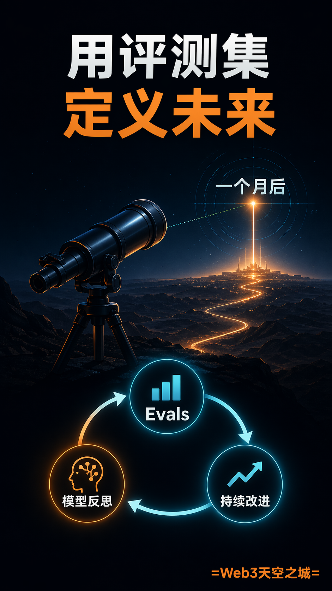
Lenny： 太棒了。回到 PM 的角色，我们之前简单讨论过这一点，但我认为这对大家来说会是非常有趣的内容。我真正想了解的是，您认为目前 AI 公司在招聘 PM 时，最看重或最希望他们具备哪些新兴技能？
Cat Wu： 我认为最难的技能是能够定义产品一个月后的形态。我认为在这一时间维度上，模型的能力以及用户行为将如何变化，存在着很大的不确定性。但我认为，顶尖的 PM 可以根据用户如何利用现有产品的局限性，从中洞察出一些模式。最优秀的 PM 能够感知到这些，设定方向，并稳步推进执行；如果模型的能力远超或远低于预期，他们也能及时调整路径。
我认为要保持适度的 AGI-pilled 状态非常困难。每个人都能预见到这样一个未来：模型变得极其聪明，几乎可以完成所有事情，在这种情况下，你实际上根本不需要那么复杂的产品。你甚至可以回归到一个简单的文本框，直接告诉模型你想要什么。而模型足够聪明，可以自动添加它完成任务所需的任何工具或集成。它知道自己何时处于不确定的状态。它能够提出澄清性的问题。就像为超级 AGI 强模型构建产品其实非常简单一样。我认为难点在于针对当前的模型，如何挖掘出它的最大潜力？
Lenny： 你如何帮助用户走上“黄金路径”，如何引导用户去利用模型的优势并弥补其劣势？这种技能相当罕见，而培养这种技能的方法基本上就是去使用它，去理解每个模型的局限性，就像你提到的那样——拥有审美，去洞察模型可能擅长什么、不擅长什么，以及它的变化之处。我认为这需要花费大量时间与模型对话并使用它。
Cat Wu： 我非常喜欢做的一件事，就是要求模型对自身的行为进行反思。有时当我注意到模型表现出意料之外的行为时，例如，模型在进行前端更改并运行测试时，却并没有实际使用 UI。询问模型为什么要这样做是非常有用的；有时它会说，系统提示词中存在令人困惑的内容，或者它没有意识到前端验证是任务的一部分，又或者是它将验证工作委派给了子智能体，而该子智能体没有执行测试，且它没有检查其工作结果。很多时候，对模型为何做出特定决策保持强烈的好奇心，可以让你发现是什么误导了它，从而让你能够改进测试工具以弥补这一差距。
另一个有帮助的方法是找出哪些用户最值得你信任，并能提供关于模型的准确反馈。通常会有少数几个人，他们比其他人更擅长清晰地表达是什么让特定的模型或模型测试工具组合变得出色。虽然会有很多人向你提供反馈，但并非每个人的反馈都同样具备参考价值。因此，找到那五个你信任的人组成的群体，对于获得非常快速的反馈至关重要。
我认为第三个有用但并非每个人都乐于去做的事情，就是构建评测集。你不需要构建数百个评测集，它们就能发挥作用。仅构建 10 个重大评估基准（evals）对于帮助团队量化目标、衡量进展以及明确缺失环节至关重要。所以我认为评估基准是一项被低估的工作，更多的产品经理和工程师应该致力于此。
Lenny： 我们已经多次讨论过评估基准了。现在有一种趋势，即产品管理的未来就是编写评估基准，因为它本质上定义了什么是成功。好的，太棒了。让我来具体定义它，然后我们就会清楚了。你认为你花了多少时间在编写评估基准上？
Cat Wu： 我认为评估基准的重要性会根据你所负责的功能或你试图解决的问题而有所不同。因此，我们团队中有许多人确实花费了大量时间在评估基准的工作上。我们有一个小团队与研究部门紧密合作，以更精确地理解我们的 Claude Code 行为，找出最大的改进领域，并尝试对此进行具体的量化衡量。当我认为某个功能需要更细致的产品定义时，我会亲自参与评估（e-vals）。通常这样做出的结果是，好了，这里有五个我制作的评估案例。这是运行它们的方法。这些是成功的案例，而这些是失败的。这是我用来提高成功率的提示词。不过，具体情况会根据功能的不同而有很大差异。并非每个功能都需要这样做，但我认为像记忆（memory）这类功能从中受益匪浅。
Lenny： 你提到的关于人们非常擅长评估模型这一点非常有趣。这简直就像是一种人工评估。就像是，他们能理解模型在哪些方面表现出色，或者在哪些方面可能有所欠缺。有没有什么具体的人是你想要特别提名的，觉得他们非常擅长这件事？
Cat Wu： 我认为有两个人在这方面非常出色，第一位是负责塑造 Claude 性格的 Amanda。这真的是一个非常困难的角色，因为任务本身非常模糊。即使是编程也比这容易，因为你可以验证结果是否成功，而塑造角色则需要极强的信念感，以及明确 Claude 应该成为什么样的存在。我觉得她不仅具备塑造角色的非凡能力，还能清晰地阐述目标是什么、角色成功的定义以及什么是不成功的。
我真正信任的另一个群体是 Claude 的代码团队。我们经常一起吃午餐，每当我们测试新模型时，获取反馈最快的方式之一就是在午餐时询问每一个人：嘿，你对这个模型的整体感觉如何？通常我们会得到这样的反馈：比如，这个模型没有完全解释它的思考过程。或者说：它太唐突了，又或者是：这个模型非常喜欢写大量的记忆内容，但我们不确定这些记忆的质量是否足够高。又或者有人会注意到：这个模型很喜欢自我测试，这很好；或者这个模型自我测试得还不够。这会指引我们查看相关数据以进行验证，确认这是否是一个普遍模式。因此，我们拥有海量数据，但从中提取深刻见解是非常困难的。因此，来自该群体的反馈有助于我们确定：我们需要验证哪些假设？随后，我们就能够提取数据来对这些假设进行验证。
Claude 的性格与“拟人化”协作
Lenny： 关于你提到的 Claude 的性格这一点，我曾在播客中采访过联合创始人，他谈到了这一点，就像 Claude 的性格和准则（Constitution）是 Claude 非常重要的一部分。我直到事后才意识到，就像人们对待 Claude 时那样，事实上，人们感到难过的一个原因就是 Claude 的个性，因为 Claude 的个性非常出色、有趣且引人入胜，这与其他模型截然不同。他表达的意思是，个性即一切。正是个性使得 Claude 在诸多方面表现如此出色。这听起来似乎是一个微不足道的次要因素。它可能会很风趣、有趣，以一种轻松的方式交流，但这对于 Claude 的成功来说却是核心要素。关于人们可能不理解为什么正如你所描述的那样，其性格和个性如此关键，对此你有什么看法吗？
Cat Wu： 当你回顾所有与你共事过的人时，总会有些人让你觉得：我真的很喜欢他们的能量。就像是，我真的很喜欢他们的氛围感。当人们谈论 Claude 以及 Claude 在代码方面的表现时，这往往是大家最常提到的优点之一，大家非常喜欢 Claude 这种轻松幽默的特质，同时它在处理任务时又极其出色。
人们非常欣赏 Claude 那种谦逊的态度，所以如果你指出它做错了某件事，它会表现得非常诚恳，就像是在说：天哪，谢谢你告诉我，让我来修正它，我们一起努力。它还非常积极向上，所以如果你觉得某个任务似乎无法逾越时。或者不知道该如何着手时。Claude 会表现得像是说：没关系，这没问题。这些是我认为我们应该采取的步骤。你想让我为你从这些步骤开始处理吗？我认为优秀的同事之所以出色，部分原因就在于这种积极性、这种倾向于行动的特质，以及能够提供诚恳反馈的能力，而不是仅仅盲目赞同你所说的每一件事。因此，我们努力将这些特质注入到 Claude 中，因为我们认为这会让与它协作的过程变得更加愉悦。
随模型演进而进化的产品架构
Lenny： 有一点我想再深入讨论一下。你提到过，当新模型发布时，你通常需要重新审视自己已经构建的东西。这一点非常有趣，但也可能让人感到沮丧，就像是那种感觉：该死，我们刚发布了这个东西，结果现在又得重新思考它了。谈谈这种必须不断推出新模型的频率，他们会觉得，我们得重新做几个月前刚发布的产品。
Cat Wu： 我们在新模型中所做的许多改动，其实是在移除那些不再需要的功能。所以很多时候，我们向产品添加功能是为了辅助模型，因为模型本身并不能自然地完成这些工作。一个经典的例子就是待办事项列表。当我们最初发布 Claude Code 时，用户会要求它进行大规模的代码重构。Claude Code 会回应说，好的，没问题。我需要修改这 20 个调用点。结果它改了 5 个就停下来了。于是我们想，我们该如何强制它记住这 20 个点一个都不能漏？
所以我们团队的 sit 说，那是什么？但如果我们换位思考，考虑人类会怎么做，人类通常会列出所有需要修改的地方清单，就像在 VS Code 中你可以查找所有调用点，左侧会出现一个列表，然后你可以逐一处理并替换全部；我们该如何为 Claude 提供这类工具呢？因此他添加了待办事项清单功能，我们发现有了这个功能，Claude 确实能够修复所有这 20 个调用点。
但到了 Opus 4 及后续模型，我们意识到没必要强迫它使用这个待办事项清单。它会自然而然地主动使用它。对于早期模型，我们不得不不断提醒它：嘿，你完成待办事项清单上的所有内容了吗？如果不完成待办事项清单上的所有任务，你就不能结束工作。而对于后期模型，无需提示，它自然就会考虑到要完成待办事项清单上的每一件事。如今，待办事项清单对于用户来说依然很有用，因为这样可以更清楚地看到 Claude 正在处理什么。但坦白说，这在目前的产品中已经是一个非常边缘化的部分了，模型可能会用它，也可能不会用，现在已经没必要靠它来进行彻底的修改了。
Lenny： 我忘了是在哪期播客里听到的了，有人说模型将会轻而易举地取代你的现有架构。我在这里听到的是，本质上，随着时间的推移，当你发现模型运行不如预期时，你会移除那些不得不额外添加的限制。而从本质上讲，随着模型变得越来越聪明，它只需完成你想要的操作，过程就会变得越来越简单。
Cat Wu： 是的。每当模型变得更聪明时，我们就能移除许多提示词干预。实际上，我们每次发布新模型时都会这样做：我们会通读整个系统提示词，并反思其中的每一部分，思考模型是否还需要这些提醒。如果不再需要，我们就会将其移除。不过，新模型所解锁的最令人兴奋的事情是全新的功能。我们曾用之前的模型测试过很多功能，但由于准确性不够高，我们没能将其发布。
代码审查就是一个例子。我们曾多次尝试构建代码审查产品，也发布过简单的版本，比如过去使用的 slash code review 命令。直到最近的模型出现，我们才觉得这种代码审查非常出色，以至于我们的工程团队在合并 PR 之前都会依赖它。我们一直梦想着 Claude 能成为可靠的代码审查员，能够让我们充满信心地认为它能捕获绝大多数错误。直到 Opus 4.5 和 4.6 版本，我们才感觉到，我们现在能够同时运行多个代码审查智能体来遍历整个代码库，并综合出一套工程师在合并代码前需要解决的实际问题。这就是最新模型所解锁的一种新能力。这也是本播客中非常普遍的另一个趋势：构建那些在未来六个月内可能实现的东西，处于当前技术可行性的边缘，然后随着技术进步赶上，它就会成为一款出色的产品，让你领先于所有人。没错，确实如此。构建那些目前还不一定能完美运行的产品非常重要，这样你才能明确这款产品要实现功能缺失了什么。然后，当有了最新模型时，你可以直接将其替换进你已经做好的原型中，看看这个新模型是否填补了那个差距。
愿景：从单任务到多智能体协作
Lenny： 你能谈谈 Claude Code 和 Cowork 的未来发展方向以及愿景吗？我想你可能不想透露太多关于目标的信息，但感觉像是所有这些很棒的功能都在不断叠加，比如 dispatch、手机端控制以及所有这些移动端应用等等。从长远来看，应该如何理解所有这些功能的愿景？
Cat Wu： 我们是从构建模块的角度来考虑这个问题的。因此，对于 Claude Code 和 Cowork 而言，核心构建模块都是确保单个任务的成功。那么，当你想要生成一些产出物时，你给出了清晰的提示词描述，它是否能够持续产出令你满意，并可以直接合并或分享给同事及外部受众的内容？因此，任务是核心构建模块。
随着模型变得更加智能，任务成功率会大幅提升。变得更高，随后我们看到人们开始倾向于同时执行多项任务。因此，多任务处理在 2025 年底成为了一大趋势，并且自那以后一直在增长。所以我们将其视为：太棒了。一项任务可以完成了，现在你可以同时处理六项任务。随着模型变得更加智能，我们对此的推断是：接下来，也许你可以同时运行 50 个 Claude 或数百个 Claude。
那么，为了实现这一点，我们需要构建什么样的基础设施？在那一点上，你可能就不会再在本地机器上运行所有内容了。RAM 实在是不够用，无法完成这项任务。因此我们正在思考，如何让你们更轻松地管理所有这些内容？这些任务可能会在远程运行。我们该如何构建界面，让作为人类的你能够清楚地知道哪些任务需要去关注？我们如何确保 Agent 能够全面核实工作，这样当你看到一项任务显示已完成时，能够迅速核实并完全信任它已按你的规格要求完成。此外，如何确保这一流程能够自我优化，以便当你看到某项任务未达到你的要求时，可以给出反馈，而模型在未来的每次运行中都会纳入该反馈，从而确保永远不会再犯同样的错误。这就是我们正引领用户迈向的演进过程。
给职业人的建议：寻找 100% 的杠杆效应
Lenny： 现在有很多听众，包括许多产品经理、可能的创始人们，以及许多其他跨职能领域的专业人士，他们对于自己的角色以及未来职业生涯的发展感到非常担忧。对于普通人而言，你有什么建议，能让他们不仅能在这个由 AI 主导的世界转型期中生存下来，而且能真正取得成功，即在未来实现繁荣发展？人们需要了解并付诸行动的要点有哪些？
Cat Wu： 我认为 AI 赋予了每个人比以往多得多的杠杆效应。因此，每当你意识到自己在重复进行某项手动任务时，我建议你思考如何利用 Claude Code、Cowork 或其他 AI 工具来为你实现自动化。大多数人在工作中都有自己绝对热爱的创造性部分，也有非常讨厌处理的琐碎部分。我认为 AI 的魅力在于它可以为你处理那些琐碎的部分。它可以从你每次执行该手动任务的过程中学习并进行泛化，然后自动运行，这样你就能专注于创造性的工作，这意味着你能做到的事情远超以往。
所以我给人们的直接建议是，找出那些可以交给 Claude 的重复性任务，不断迭代这些自动化流程，直到成功率达到很高水平。然后专注于思考：你还能为你的团队、产品或公司做些什么？有哪些事情是目前大家还没有精力去承担的？又或者，有什么是你一直认为公司应该去做，但却从未有精力去执行的构想项目？那些你从未有精力去完成的工作。如果 AI 可以处理那些苦差事，那么你现在就拥有了之前可能并不具备的额外 20% 的时间。所以我建议充分利用这些工具，把那些你并不热衷的工作交出去，思考如何利用它们来提升效率，最终你将能成就更多。
Lenny： 你刚才分享的核心观点我完全赞同，那就是去寻找可以用 AI 解决的问题。这些工具拥有巨大的潜力，可以完成各种任务。对许多人来说，艺术创作中最难的部分往往是：我到底该做些什么？而你这里表达的意思是，只需留意你日常中不断在做的事情即可。你可以进行自动化处理。留意那些在你脑海中盘旋已久，但你却一直没有时间去落实的想法。归根结底，这就是为自己解决问题。这算是其中的核心建议。
Cat Wu： 没错。我还会建议听众重点关注如何将自动化从“这真是一个很酷的概念”，推进到“嘿，这确实能百分之百有效运行”的阶段。就像有时我看到用户试图自动化某些工作，当准确率达到 90% 或 95% 时，他们就放弃了。但如果是这样，如果一个自动化流程不能百分之百运行，那它就称不上真正的自动化。而最后那 5% 到 10% 的改进确实需要花费更多时间。
此外，构建自动化的过程往往比你自己亲手去处理要慢得多。我鼓励听众投入时间去规划那些你真正想要实现 100% 自动化的任务，付出努力去向 Claude 传达你的偏好，并提供反馈，以便它能提升技能达到 100% 的效果，这样你才能真正信赖它。对于一个只有 95% 准确率的自动化流程，其价值并不高。我在这方面也深受其害，这对我来说是非常好的建议，我也犯过同样的错误。我一直在教导 Claude 帮我实现 Gmail 收件箱清空，但这非常耗时，而且显然还没有达到预期的效果，正如你可能意识到的那样。
Lenny： 没错。有趣的是，我的想法正是如此。我设置了一个工作流，每当收到邮件时，它就会筛选出那些垃圾信息，比如“我可以上你的播客吗？”或者类似的内容。对于这些事情，我通常会想，我没时间处理这类琐事。我让它将这些邮件归类到一个叫“垃圾信息”的文件夹中。目前它大约有 95% 的效果是好的。但随后就出现了这种情况，现在，我漏掉了一封邮件，因为它被归类到那里去了。所以这对我来说是一个很好的推动，我想，我会在这方面下功夫。我会把它做到完美。
Cat Wu： 是的。我们也在努力让自定义这些指令的流程变得更加简单，因为目前我认为你需要了解的概念实在太多了。你必须知道如何定义一项 skill。你必须知道如何使用这项 skill 并给予反馈。然后你还必须知道如何告知 Cowork 根据你给出的所有反馈来更新这项 skill。并且你还需要知道去哪里查看这项 skill，以确保反馈已经按照你想要的方式整合进去。这也是我们的工作，即让这个流程变得非常顺畅，这样操作起来就不会感到痛苦。
实战出真知：拒绝无意义的定制化
Lenny： 太棒了。Cat，还有什么是你想分享的吗？还有什么想留给听众的建议，或者在我们进入令人期待的快问快答环节之前，有什么你想强调但我们尚未触及的内容吗？
Cat Wu： 我看到很多人在尝试使用 AI，构建原型应用程序，并钻研如何构建工作流。我真心建议大家去开发那些自己每天都在使用的应用程序。因为我认为只有通过这种实际使用，你才能真正获得价值。比如，如果你开发了一个无法帮助你提高效率的原型应用，那么 AI 就没有真正为你的一天增加价值。
Lenny： 当你只是草草尝试了一次时，你能从中学习到的东西是非常有限的。那看起来挺酷的。然后你就再也不会去使用它了。这样你学不到太多东西。
Cat Wu： 你也无法从中获得太多的杠杆效应。真正的杠杆效应。没错，这是一个非常好的观点。我也认为有很多人花费了大量时间来定制他们的工作流程。所以我认为这就像是处在两个极端。一端是那些从不进行定制或从不构建自动化工具的人，但与此截然相反的另一端，是那些沉迷于定制工具的人，比如添加大量的技能、MCP 以及各种工作流程改进。而且我认为有时这甚至会分散你实现核心目标的注意力，比如发布某些产品或构建某些功能。
Lenny： 我认为定制化本身充满了乐趣，我们确实希望让我们的产品具有极高的可黑客性，以便你能让它们非常契合你的需求。但定制的效用是有极限的，我认为有一类人可能在定制上花费了太多时间，以至于不仅熬夜，甚至放弃了他们最初设定的核心任务。我在 Twitter 上经常看到这种情况，比如：快看我的配置，它已经失控了，它是如此地优化。可你到底在构建什么呢？不，我的配置太棒了，我可以实现很多功能。我认为简单的配置实际上效果更好，或者说能够让你更快地进阶。
正如 Karpathy 昨天发布的那条推文所提到的，在那些尝试过 ChatGPT、Claude 的人之间存在着一种有趣的鸿沟：有些人当初用过之后觉得也就那样，或者是觉得这玩意儿太糟糕了，于是他们放弃了，不再去关注 AI 能为他们做什么，甚至变得非常愤世嫉俗，认为这根本没什么了不起。而另一边则是那些利用它进行编程的人，他们看到了其全部强悍的力量以及它有多么出色。双方都无法理解对方，也不理解对方是如何看待这个世界的。所以你的建议非常好，就是真正地把它投入到实际应用中，去看看它现在到底有多强大。我认为最大的转变在于，2024 年代的产品是基于聊天的，而 Claude 的代码生成产品是基于行动的。人们最大的顿悟时刻，就是当 Claude 能够直接代你执行任务的时候。
Cat Wu： 知道智能体不仅仅能告诉你该怎么做，还能做更多的事情，这种感觉真的很棒。就像智能体实际上可以自己直接完成任务一样。当人们感受到这一点时，我认为这就是让人大开眼界的时刻。
Lenny： 特别提一下一个 Chrome extension，名为 Claude 插件，你可以直接看着它操作。你会对它说，帮我把这个表格填好。然后它就会说，好的，交给我吧。没错。好的，在进入非常激动人心的快问快答环节之前还有什么要说的吗？不，我们开始吧，开始吧。
快问快答：攀岩、Waymo 与第一性原理
Lenny： Cat，我有五个问题要问你，欢迎来到快问快答环节。有段动画会播放，我必须得说一下，你准备好了吗？我准备好了。第一个问题，有哪些两三本书是你最常推荐给别人的？
Cat Wu： 我非常喜欢 How Asia Works，这是一个关于经济发展的故事，讲述了哪些政策和政府促成了长期且持续成功的经济。我非常喜欢的其他书还有 The Technology Trap。这本书实际上是关于过去几次技术革命的，比如工业革命和计算机革命，以及这些革命是如何影响工人的。我之所以非常喜欢这本书，是因为我认为我们可以从历史中学到很多东西，以确保这次转型能够顺利进行。或许从轻松一点的角度来说，我真的很喜欢《纸中动物园》（The Paper Menagerie）。那是一本短篇小说集，讲述了关于成长、AI 以及自我发现的故事。
Lenny： 你最近特别喜欢的电影或电视剧是什么？
Cat Wu： 我真的很喜欢《一级方程式：疾速争胜》（Drive to Survive）。它没什么深层的寓意。我只是觉得，看着人们对某个单一的工程目标如此痴迷，有一种非常满足的感觉。那种追求的纯粹感很吸引人。另外我也很喜欢《徒手攀岩》（Free Solo），讲的是 Alex Honnold 在没有安全绳的情况下攀登 El Capitan 的故事。我觉得类似地，能够攀登这样一条极具挑战性且危险的路线，并且在深知一旦犯错就会丧命的情况下保持精神专注，这是一种极其纯粹的成就。
Lenny： 这太疯狂了。没错，那部电影简直不可思议。这些内容与你的工作在某种程度上有着有趣的联系。
Cat Wu： 其实我本人也是一名攀岩者。我在开始攀岩之前就先看了 Free Solo。当时我觉得这部片子很震撼，但我并不理解它究竟有多么了不起。这是极少数那种你了解得越多，就越会被其疯狂程度所震撼的电影。他在岩壁上做的那些动作，即便是在离地一英尺的攀岩馆里，我也觉得我这辈子都做不到。
Lenny： 还是在有绳索保护的情况下。
Cat Wu： 还是在有绳索保护的情况下。
Lenny： 你看过关于另一个年轻人去攀冰的那部纪录片吗？我看过。
Cat Wu： 那件事非常令人难过。
Lenny： 但这太狂野了。好的。你最近发现的最喜欢的产品是什么，而且是你真正喜欢的？
Cat Wu： 除了 Claude 产品之外，对我生活改变最大的产品可能就是 Waymo 了。我简直是 Waymo 的死忠用户。我每天使用两次，往返于工作地点。我真正喜欢它的两点是，第一，如果 Waymo 在等我不会感到愧疚。所以我感觉自己没那么大压力非得在它抵达的那一刻准时出现在路边。第二点是，我觉得它能让我稍微提高一点工作效率。当我和另一个人在车里时，我通常尽量不打工作电话，如果我一直用笔记本电脑，我会觉得有点失礼。但我非常欣赏 Waymo 的一点是，我可以拨打工作电话，不必担心有人会偷听，也不必担心这是否失礼，是否说话声音太大，或者是否需要请别人调低音乐。我觉得这每天为我节省了大约 30 分钟。
所有这些技术的二阶效应真的非常有趣。我一直认为 Waymo 需要比 Uber 和 Lyft 定价更低才能成功，但实际上，我很乐意为此支付 2 倍的溢价。我太喜欢 Waymo 了，一旦你体验过，就会觉得这简直太疯狂了，然后你就会习惯它。你坐进去会觉得这太棒了，接着你就会习以为常。
Lenny： 完全同意。而且我认为它也改变了我们的日常用语。像 Anthropic 的许多人一样，我也很喜欢 Waymo。我想过去你可能会说，嘿，比如，我们要怎么调用这个应用。而现在大家只会问，Waymo 到了吗？
Lenny： 好的，还有两个问题。你是否有在工作或生活中经常践行的人生格言？
Cat Wu： 去行动就好。
Lenny： 很有道理。
Cat Wu： 我认为第一性原理思维非常有价值。如果你清楚自己的优化目标，并拥有坚实的第一性原理，那么你通常就能推导出正确的行动方针，并能向所有利益相关者清晰地传达这一点。然后你只需要去执行它。我觉得工作本身是虚构的。如果你理解了限制条件，你就能弄清楚自己能做什么，然后尝试快速执行，从错误中学习，如果做错了就道歉或进行补救。
Lenny： 你可以直接去行动，正如那句话所说。
Cat Wu： 我认为告诉人们这一点实际上是一种解脱。我觉得在很多公司里，职位界限划分得非常严格。比如，PM 该做什么，设计师该做什么，工程师该做什么，都有明确规定。甚至连团队的工作范畴也被严苛地界定着。比如，代码库的这个角落是我们负责的，而那个角落我们不允许触碰。我认为“只管去做”能让人们感到自己有权做出决策，有权跨越团队边界去协作，只为达成目标。
Lenny： 这似乎是一项非常重要的能力，人们称之为主动性，也就是只管去做那些需要完成的事情。倾向于行动。所有这些描述方式，就好像是，根本不需要获得许可。
Cat Wu： 是的。我认为这是我人生中某个阶段选择在创业公司工作的最重要原因，因为有一件事对我而言非常具有变革意义，那就是在我们只有 20 人的时候去处理大规模业务。当时没有任何流程可循，但我们面临着一些必须要解决的重大难题。我非常感激 Alex 和团队的其他成员，他们赋予了我以及整个团队充分的自主权。让我们能够在没有任何条条框框的情况下找出解决办法，不必纠结于销售该做什么、行政该做什么、工程师又该做什么。
你拥有所有可用的工具，面对的是一些雄心勃勃且棘手的问题，你可以通过任何必要的方式去达成理想的解决方案。你几乎需要这种经历来培养那种能力，让自己在做这些事时感到从容，因为很多人在学校和大学里习惯了被要求“去做我们让你做的事，你就能拿到好成绩”，你需要打破这种思维定势，转变为“好的，我只需要去做那些真正需要被完成的事情”。
Lenny： 即使别人认为这很愚蠢，但我认为这是正确的做法。
Cat Wu： 完全正确。
源码泄露与 AGI 后的闲暇
Lenny： 好的，我还有两个简短的问题。最后两个问题。一种情况是 Claude 认为这里有所有这些，我不知道你们是否称它们为动词。这些东西的术语是什么？思考词。
思考词。有趣的是，这些词全都泄露在源代码中了。你有什么喜欢的思考词吗？
Cat Wu： 我真的很喜欢 manifesting。这也像是贴在我思想上的标签。
Lenny： 太棒了。显然是获胜者。好了，最后一个问题。至于我们，随着 AGI 有可能在我们这一代人有生之年到来，当你不必为了生计而工作时，你打算做什么呢？你打算如何打发所有的时间？
Cat Wu： 我认为 AGI 在全社会范围内的普及还需要很长一段时间。所以我认为当务之急其实就是协助推动世界的发展。对于这件事发生之后，我不那么严肃的回答是，我可能会去进行大量的攀岩活动。我大概会找个地方住下来。我可能会搬到 Fontainebleau 之类的地方，住在 10,000 块巨石之间，攀岩一段时间。
还有很多我想读的书，我的目标是每周能读一两本书，而我现在大概只能读 0.5 本。待读清单相当长。我认为我们可以从历史中学到太多东西，还有很多事情是我目前了解得不够透彻的。比如说，我对物理学、机器人学、任何硬件或者航空航天领域一无所知，或者说还有太多有趣的领域了。所以我很兴奋能去学习这些知识，哪怕我知道 AGI 可能已经掌握了它们。
Lenny： Cat，这次谈话太棒了。你太厉害了。我有两个后续问题。如果人们想联系你并关注你的动态，可以在哪里找到你？听众们能为你提供什么帮助吗？
Cat Wu： 最好的联系方式是我在 Twitter 上的账号。欢迎在相关内容中艾特我。欢迎随时给我发私信。我的每一条私信都会阅读。我并不总是会回复每一条信息，但我会阅读所有内容。
而最有帮助的做法是告诉我们 Claude Code 和 Cowork 在哪些方面对您来说表现不佳。我们非常感谢收到的海量正面反馈，但我们真正关注的是边缘案例、错误，即我们可以复现的、Claude Code 或 Cowork 失败的具体任务。因为如果您能与我们分享这些情况，并且我们能够复现它们，那么我们就能针对下一代模型和后续版本进行主动改进。
Lenny： 太酷了。Twitter 上的用户在分享这些反馈时从不吝啬。所以请继续保持。
Cat Wu： 请与我们分享。请务必、务必与我们分享您遇到的问题。
Lenny： 这真的很酷。看到你和你的团队在 Twitter 上如此活跃并积极回应大家，真是太好了。所以，我听到的情况是，这些反馈确实是你们真正关注并做出反应的内容。
Cat Wu： 我们非常感谢大家与我们的积极互动。这给了团队极大的动力。我们专门设立了一个名为“用户热爱”的渠道。每当你们分享成功案例时，我们就会发布在那里。而每当你们分享产品问题时，我们就会将其归入反馈渠道。这样我们的整个团队就能据此采取行动。
Lenny： 了解到这一点真的很棒。谢谢你的分享。好的，Cat，非常感谢你能来到这里。
Cat Wu： 谢谢邀请我参加。
Lenny： 再见，各位。